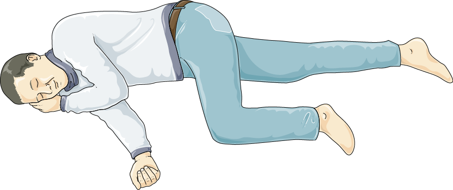

衛教目錄 › 發燒與感染 › 熱性痙攣
熱性痙攣
孩子發燒時突然兩眼上吊、全身僵硬或抽動、叫不醒——這是很多家長最害怕的畫面。熱性痙攣是幼兒最常見的抽筋，絕大多數在幾分鐘內自己停止，不會傷害腦部。家長最重要的工作是：保持冷靜、讓孩子側躺、記錄時間。
6 個月–5 歲好發年齡；約每 20–30 個孩子就有 1 個發生過
5 分鐘抽筋超過 5 分鐘，請叫救護車
約 3 成之後發燒時會再發生一次以上
1什麼是熱性痙攣？
- 定義：6 個月到 5 歲的孩子，在發燒（38°C 以上）時發生抽筋，而且不是腦膜炎、腦炎等腦部感染或其他原因造成 [1]。
- 時機：常發生在發燒的第一天，有時抽筋時家長才發現孩子發燒。
- 樣子：突然叫不醒、兩眼上吊或凝視、全身僵硬、手腳規律抽動，嘴唇可能發紫、口吐白沫；通常1–2 分鐘內停止。
- 原因：幼兒的大腦還在發育，對發燒特別敏感；常有家族傾向。引起發燒的多半是一般的病毒感染，例如感冒、玫瑰疹、流感。
2孩子抽筋時，家長怎麼做？
記住：冷靜、計時、側躺、看著
- 保持冷靜，看時間（用手機計時），抽筋多久是醫師最需要的資訊。
- 把孩子放在安全的平面（地板或床上），移開周圍尖銳、堅硬的東西。
- 讓孩子側躺，讓口水、嘔吐物從嘴角流出，避免嗆到。
- 鬆開領口、衣服。
- 可以的話請旁人錄影，給醫師看抽筋的樣子。
- 陪在旁邊看著，直到孩子停止抽動、恢復呼吸順暢。

Laboratoires Servier／Wikimedia Commons／CC BY-SA 3.0
3千萬不要做的事
- 不要塞任何東西到嘴裡（手指、湯匙、毛巾、筷子）：孩子不會咬斷舌頭，塞東西反而會弄傷牙齒、嘴巴，或造成窒息。
- 不要用力壓住手腳，抽筋不會因此停止，反而可能受傷。
- 不要搖晃、拍打、掐人中或潑冷水。
- 不要餵水、餵藥（包括退燒藥），等孩子完全清醒再說。
- 不要急著抱起來衝出門，先在安全的地方讓抽筋停下來。
4這些情形，立即打 119
- 抽筋超過 5 分鐘還沒停
- 抽完後又再抽，或中間一直沒有清醒
- 呼吸困難、臉色持續發紫
- 抽完超過 30–60 分鐘還叫不太醒、意識不清，或一邊手腳無力
- 孩子有頸部僵硬、劇烈頭痛、持續嘔吐、皮膚出現紫色斑點
- 未滿 6 個月的寶寶發燒抽筋
即使已經停了，第一次熱性痙攣也請帶孩子就醫，讓醫師找出發燒的原因並排除腦部感染。
5抽完之後
- 孩子常會想睡、疲倦或有點迷糊，可能持續數分鐘到 1 小時，這是正常的；讓他側躺休息，在旁邊觀察呼吸。
- 完全清醒、能吞嚥之後，再給退燒藥和水分，讓孩子舒服一點。
- 記下：開始時間、持續多久、抽動的樣子（全身或單側）、抽完多久清醒，就醫時告訴醫師。
6會不會傷到腦？以後會再發嗎？
- 不會傷害腦部：單純型熱性痙攣不會影響智力、學習或行為發展 [2,4]。
- 再發：約 3 成的孩子之後發燒時會再抽一次以上 [2,4]。下列情況較容易再發：第一次發生時未滿 18 個月、家人有熱性痙攣、抽筋時體溫不是很高、發燒不久就抽筋 [4]。
- 癲癇：單純型熱性痙攣之後發生癲癇的機會只比一般孩子稍微高一點（約 1–2%）[2]；大多數孩子在 5–6 歲後就不再發生。
7常見迷思
- 「早一點吃退燒藥就不會抽筋？」研究顯示，退燒藥無法預防熱性痙攣再發 [5]。退燒藥的目的是讓孩子舒服，不需要半夜叫醒孩子吃，也不需要燒一點點就吃。
- 「要不要每天吃抗癲癇藥預防？」單純型熱性痙攣不建議長期吃抗癲癇藥，副作用大於好處 [2,5]。
- 「以後還能打疫苗嗎？」可以，請照時程接種。疫苗本身預防的感染，比疫苗後偶爾的發燒更危險。
- 「抽筋會咬斷舌頭？」不會。最多咬破舌頭邊緣，會自己好。
8醫師開的急救藥
曾經抽筋很久、或住得離醫院很遠的孩子，醫師可能開立急救用的抗痙攣藥，例如鼻噴或口頰的 midazolam、肛門塞劑 diazepam：
- 抽筋超過 5 分鐘時使用，用完仍要叫救護車或就醫。
- 請醫師或護理師示範用法，並留意藥品有效期限。
- 使用後孩子會比較想睡，要讓他側躺並觀察呼吸。
近五年實證重點（2026/11 整理）
- 各國指引比較：2024 年系統性回顧比較 7 份指引（日本、英國、美國、墨西哥、印度、義大利），共識為單純型多不需神經影像與腰椎穿刺；住院條件常包括 < 18 個月與複雜型；單純型不建議藥物預防，只在高風險個案考慮 [3]。
- Cochrane 2021：持續或間歇性抗癲癇藥對再發的效果有限且副作用多；退燒藥無法降低再發；不建議常規用於單純型 [5]。
- 感染誘發的急性腦病變：2025 年國際共識定義（如 AESD、ANE、FIRES），提醒長時間痙攣後意識持續不佳或出現雙相痙攣時，要想到腦病變而非單純熱性痙攣 [7]。
- 家屬衛教仍是處置核心：降低焦慮、正確急救、避免不必要的檢查與用藥 [4,8]。
定義與分類
| 類型 | 條件 |
|---|---|
| 熱性痙攣 | 6–60 個月，體溫 ≥ 38°C，無中樞神經感染、代謝異常，且無無熱性痙攣病史 [1] |
| 單純型 | 全身性、持續 < 15 分鐘、24 小時內不再發 [1] |
| 複雜型 | 局部性發作、持續 ≥ 15 分鐘，或 24 小時內再發（任一項） |
| 熱性重積狀態 | 持續 ≥ 30 分鐘，或連續發作期間未恢復意識；需積極評估與治療 |
評估與檢查（AAP 2011：單純型）
| 檢查 | 建議 |
|---|---|
| 腰椎穿刺 | 應執行：有腦膜刺激徵象或病史、理學檢查懷疑腦膜炎或顱內感染。 可考慮：6–12 個月且 Hib 或肺炎鏈球菌疫苗未完成或不明；已使用抗生素（可能遮蔽腦膜炎症狀）[1] |
| 腦波（EEG） | 神經學正常的單純型不需要 [1] |
| 血液檢查（電解質、鈣、磷、鎂、血糖、CBC） | 不需常規，依發燒原因評估（如嘔吐腹瀉脫水）[1] |
| 神經影像（CT、MRI） | 單純型不需要 [1] |
複雜型或不典型
- 個別評估：局部發作、局部神經學缺損、持續意識不佳或顱內壓升高徵象時，考慮 MRI（緊急時 CT）[3,6]。
- EEG 依臨床決定，如反覆複雜型、發展遲緩或懷疑癲癇症候群 [3]。
- 住院觀察：< 18 個月、複雜型、未找到發燒原因、照顧者無法觀察或臨床疑慮 [3]。
鑑別診斷
| 疾病 | 區分線索 |
|---|---|
| 腦膜炎、腦炎 | 頸部僵硬、囟門膨出、意識持續不佳、局部神經學徵象、皮膚瘀斑 |
| 感染誘發的急性腦病變（AESD、ANE 等） | 長時間痙攣後意識不清持續 > 數小時、數天後再出現一群痙攣（雙相）；MRI 擴散異常 [7] |
| 發冷顫抖、熱性肌躍 | 意識清楚、可被打斷、無眼球上吊 |
| 屏息發作、昏厥 | 有哭鬧或姿勢誘因，先發紺或蒼白再失去意識 |
| Dravet 症候群 | 1 歲前開始、長時間或半側熱性痙攣、反覆、對熱水澡或疫苗敏感，之後發展遲緩；考慮 SCN1A 檢測 |
| GEFS+、癲癇首次發作 | 超過 6 歲仍有熱性痙攣、合併無熱性發作、明顯家族史 |
| 電解質異常（低血鈉、低血鈣、低血糖） | 嚴重腸胃炎、脫水、營養不良 |
急性處置與劑量（發作 ≥ 5 分鐘）
| 階段 | 藥物 | 劑量 |
|---|---|---|
| 院前或無靜脈管路 | ||
| 第一線 | Midazolam 口頰或鼻內 | 0.2–0.3 mg/kg（最多 10 mg） |
| 第一線 | Midazolam 肌肉注射 | 13–40 kg：5 mg；> 40 kg：10 mg（單次）[6] |
| 第一線 | Diazepam 肛門 | 2–5 歲 0.5 mg/kg；6–11 歲 0.3 mg/kg（最多 20 mg） |
| 有靜脈管路 | ||
| 第一線 | Lorazepam IV | 0.1 mg/kg（最多 4 mg），可重複 1 次 [6] |
| 第一線 | Diazepam IV | 0.15–0.2 mg/kg（最多 10 mg），可重複 1 次 [6] |
| 20–40 分鐘仍持續（第二線，擇一） | ||
| 第二線 | Levetiracetam IV | 60 mg/kg（最多 4,500 mg） |
| 第二線 | Fosphenytoin IV | 20 mg PE/kg（最多 1,500 mg PE）[6] |
| 第二線 | Valproate IV | 40 mg/kg（最多 3,000 mg）[6]；< 2 歲或疑似代謝疾病避免 |
| 第二線 | Phenobarbital IV | 15–20 mg/kg |
依美國癲癇學會 2016 指引 [6]；levetiracetam 劑量依 ESETT 試驗常用劑量。苯二氮平類最多 2 劑，注意呼吸抑制；同時處理呼吸道、給氧、量血糖並找出發燒原因。
預防性用藥
- 持續性抗癲癇藥（phenobarbital、valproate）：可能降低再發，但副作用（行為、認知、肝毒性）超過效益，不建議用於單純型 [2,5]。
- 間歇性 benzodiazepine（發燒時口服或肛門 diazepam、口服 clobazam）：可能稍降再發，但有嗜睡、步態不穩，且可能遮蔽中樞感染徵象；AAP 不建議常規使用，部分指引保留給反覆長時間發作或照顧者極度焦慮的家庭 [2,3,5]。
- 退燒藥：無法預防再發，只用於改善不適 [2,5]。
- 急救用藥：曾有長時間發作者，開立口頰或鼻內 midazolam、肛門 diazepam，並教導家屬使用時機 [4]。
- 可留意缺鐵，部分研究顯示與熱性痙攣相關，可依飲食與病史評估 [4]。
再發與癲癇風險
| 項目 | 內容 |
|---|---|
| 再發機率 | 整體約 30%；首次發作 < 12 個月者約一半會再發 [2,4] |
| 再發危險因子 | 首次 < 18 個月、一等親有熱性痙攣、發作時體溫較低、發燒到發作間隔短；危險因子越多風險越高 [4] |
| 日後癲癇 | 單純型約 1–2%（一般人約 1%）[2]；複雜型、神經發展異常、癲癇家族史、多次複雜型者較高 |
參考資料
- Subcommittee on Febrile Seizures; American Academy of Pediatrics. Neurodiagnostic evaluation of the child with a simple febrile seizure. Pediatrics. 2011;127(2):389–394. doi:10.1542/peds.2010-3318 AAP 指引
- Steering Committee on Quality Improvement and Management, Subcommittee on Febrile Seizures; American Academy of Pediatrics. Febrile seizures: clinical practice guideline for the long-term management of the child with simple febrile seizures. Pediatrics. 2008;121(6):1281–1286. doi:10.1542/peds.2008-0939 AAP 指引
- Corsello A, Marangoni MB, Macchi M, et al. Febrile seizures: a systematic review of different guidelines. Pediatr Neurol. 2024;155:141–148. doi:10.1016/j.pediatrneurol.2024.03.024 指引系統性回顧
- Ferretti A, Riva A, Fabrizio A, et al. Best practices for the management of febrile seizures in children. Ital J Pediatr. 2024;50(1):95. doi:10.1186/s13052-024-01666-1 回顧
- Offringa M, Newton R, Nevitt SJ, Vraka K. Prophylactic drug management for febrile seizures in children. Cochrane Database Syst Rev. 2021;6:CD003031. doi:10.1002/14651858.CD003031.pub4 Cochrane 回顧
- Glauser T, Shinnar S, Gloss D, et al. Evidence-based guideline: treatment of convulsive status epilepticus in children and adults. Epilepsy Curr. 2016;16(1):48–61. doi:10.5698/1535-7597-16.1.48 AES 指引
- Sakuma H, Thomas T, Debinski C, et al. International consensus definitions for infection-triggered encephalopathy syndromes. Dev Med Child Neurol. 2025;67(2):195–207. doi:10.1111/dmcn.16067 國際共識
- Eilbert W, Chan C. Febrile seizures: a review. J Am Coll Emerg Physicians Open. 2022;3(4):e12769. doi:10.1002/emp2.12769 回顧
文獻搜尋截至 2026 年 11 月。AAP 2008、2011 指引至今未改版，仍為各國指引的主要參考，故雖超過五年仍列入。
本頁內容整理於 2026 年 11 月，供門診衛教與醫療人員參考，不能取代個別的診察與判斷。藥物劑量請以藥品仿單及最新指引為準。